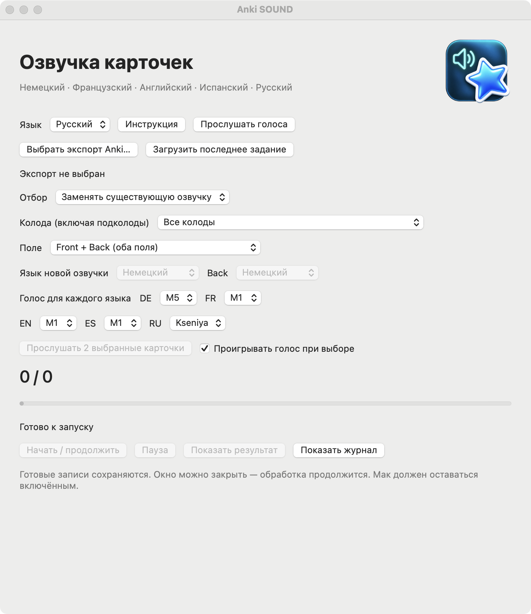

РУКОВОДСТВО · ВЕРСИЯ 3.4.10
Anki SOUND
Программа для macOS, которая локально озвучивает выбранные карточки Anki и создаёт отдельный проверенный экспорт. Прогресс сохраняется; пауза завершается после текущей записи.


Описание проекта
Anki SOUND объединяет нативный интерфейс macOS и возобновляемую локальную обработку речи. Основные задачи: явный отбор, сохранение учебных данных, атомарная публикация файлов, проверка формата Anki и управление с клавиатуры. Текущая версия — локальный прототип, а не дополнение Anki или публично нотарифицированное приложение.
Установка
Нужны Mac с Apple Silicon, macOS 13 или новее и Python 3.9–3.12. Проверено на macOS 15.7 / Python 3.9.6. В пакет включены приложение, исходники, настройки и инструкции. Python, зависимости и модели голосов НЕ включены. Распакуйте всю папку в доступное для записи место. Если Python отсутствует, установите подходящую версию с python.org. Запустите SETUP.command (нужен интернет), затем previews/Anki SOUND.app. Приложение и папка проекта должны оставаться вместе; после переноса папки повторите SETUP.command. Приложение подписано локально, без нотарификации. Если macOS блокирует запуск, проверьте источник и контрольную сумму и разрешите именно это приложение через «Системные настройки → Конфиденциальность и безопасность». Не отключайте защиту системы целиком.
Как работает
Чтение экспорта → отбор полей → очистка HTML для произношения → запись чисел словами → локальная генерация → сохранение полного WAV → проверка и публикация экспорта. Anki SOUND меняет поля заметок только в явно выбранных местах со звуком. Исходный файл сохраняется. Немецкий голос — M5; французский, английский и испанский — M1; русский — Kseniya. Интерфейс доступен на немецком, английском и русском; язык озвучки выбирается отдельно.
Голоса и теги
У каждого языка свой текущий голос: DE M5, FR M1, EN M1, ES M1 и RU Kseniya. Его можно поменять в выпадающем списке; выбор сохраняется в новом задании. В режиме «Карточки с тегом» укажите отдельное название тега для DE, FR, EN, ES и RU. Например, тег fr-audio выберет французский Front, а de-audio — немецкий Back в французской колоде. Теги сравниваются целиком: soundish не равен sound.
Три способа отбора
1. Замена существующего звука: сначала добавьте озвучку любимым способом — записью, дополнением или аудиофайлом. Anki SOUND заменяет имеющиеся ссылки [sound:…], но не добавляет звук в ранее неозвученные поля. Можно ограничить колоду и поле. Распознаются корневые колоды Deutsch, German, Немецкий, !Немецкий (Front → немецкий) и Französisch, French, Французский (Front → французский, Back → немецкий).
2. Карточки с тегом: укажите точное название тега для каждого языка. Язык определяется по распознанной колоде и полю: для DE/EN/ES/RU используется Front; во французской колоде Front — FR, Back — DE. Непомеченные заметки не меняются. Можно дополнительно ограничить колоду и поле.
3. Выбранная колода: выберите её из списка, прочитанного из экспорта. Подколоды включаются. Тег не нужен. Озвучиваются только выбранные поля.
Поля: список содержит реальные названия из экспорта. Front + Back обрабатывает оба поля с такими именами, языки для них выбираются отдельно. Поле не всегда равно видимой стороне: перевёрнутые шаблоны могут показывать поля иначе. Заметки, одновременно относящиеся к колодам вне выбранной, исключаются. Названия ваших колод и полей не переводятся. Цветные флаги карточек не используются.
Порядок работы
Создайте в Anki свежий экспорт в новом формате, желательно с медиа и расписанием. Выберите файл, режим и при необходимости колоду, поле и язык озвучки. Запустите обработку. Пауза срабатывает после текущей записи. По завершении нажмите «Показать результат». Перед импортом сохраните свежую резервную копию. При обновлении существующих заметок через APKG выбирайте «Всегда обновлять заметки»: их время изменения в экспорте сохранено. Не переносите вслепую старое расписание поверх текущего прогресса. Сначала проверьте импорт в отдельном профиле. Проверяется содержимое выходного пакета, а не любые настройки импорта.
Ограничения и приватность
Обрабатывается только явно выбранное содержимое. Пустые поля и неразобранные числа пропускаются. Кириллица разрешена для русской озвучки; в остальных языках такие фрагменты требуют проверки; несколько ссылок на аудио в одном поле требуют ручной проверки. В выходном пакете есть новая озвучка и медиа из входного файла. Отсутствующие старые медиа не восстанавливаются. Техническая проверка окончания выявляет некоторые риски обрыва, но не гарантирует произношение каждого слова. Перед большим импортом прослушайте примеры. Карточки и записи обрабатываются локально; только установщик скачивает публичные компоненты и модели. Папки output содержат частные тексты, их нельзя включать в портфолио. Второй записывающий процесс блокируется; закрытие окна не останавливает работу. На время обработки отключается автоматическое засыпание, пока Mac включён и крышка открыта.
Русская озвучка и примеры
Русский язык доступен во всех трёх режимах. Голоса: Kseniya (начальная настройка), Xenia, Baya — женские; Aidar, Eugene — мужские. Настройка русского голоса независима от остальных языков. Колоды Русский / Русский язык / Russian / Russisch определяют русский Front. Для другой колоды или обратного поля используйте «Выбранная колода» и явно выберите русский язык. В режиме тегов у RU своё «Название тега»; сам тег не определяет язык.
Кнопка «Прослушать голоса» открывает общий список: 40 прежних примеров и 5 русских, с переключением языка страницы. После новой установки запустите SAMPLES.command для создания этих примеров. Записи создаются локально.
Установщик дополнительно загружает зависимости и русскую модель около 139 МБ с проверкой SHA-256. Модель не включена в пакет. Условия использования модели, включая некоммерческую лицензию, приведены в Сторонние компоненты и модели голосов. Русские числа, время и даты ДД.ММ.ГГГГ записываются словами перед озвучкой. Иностранные слова и неподдерживаемые символы нужно записать русскими буквами; иначе поле будет пропущено для проверки. Длинные тексты разбиваются на части и соединяются с паузами. Исходный текст карточки сохраняется.
Прослушивание перед запуском
При смене голоса включённый флажок «Проигрывать голос при выборе» сразу воспроизводит готовый короткий пример в отдельном небольшом окне. Его можно отключить или закрыть: звук сразу остановится. Кнопка «Прослушать 2 выбранные карточки» берёт до двух подходящих карточек по текущему режиму, колоде, полю и тегам, создаёт временные WAV и проигрывает их в том же отдельном окне. Экспорт и очередь при этом не меняются. Смена режима, колоды, поля, тега или голоса также останавливает прослушивание. Закрытие главного окна завершает программу, когда фоновой задачи нет; при активной озвучке задача продолжает работу как раньше.